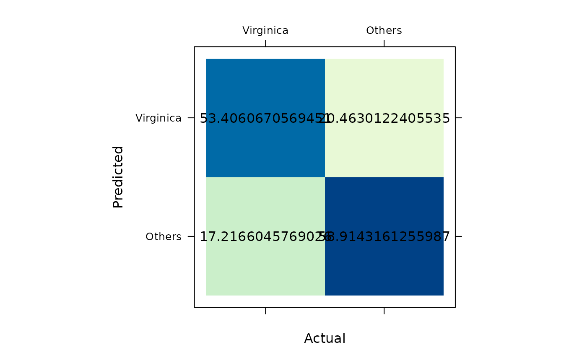

Confusion Matrix
cmatrix.RdThe cmatrix()-function uses cross-classifying factors to build
a confusion matrix of the counts at each combination of the factor levels.
Each row of the matrix represents the actual factor levels, while each
column represents the predicted factor levels.
Dimensions
There is no robust defensive measure against misspecififying the confusion matrix. If the arguments are correctly specified, the resulting confusion matrix is on the form:
| A (Predicted) | B (Predicted) | |
| A (Actual) | Value | Value |
| B (Actual) | Value | Value |
See also
Other Classification:
ROC.factor(),
accuracy.factor(),
baccuracy.factor(),
ckappa.factor(),
dor.factor(),
fbeta.factor(),
fdr.factor(),
fer.factor(),
fmi.factor(),
fpr.factor(),
jaccard.factor(),
mcc.factor(),
nlr.factor(),
npv.factor(),
plr.factor(),
prROC.factor(),
precision.factor(),
recall.factor(),
specificity.factor(),
zerooneloss.factor()
Other Supervised Learning:
ROC.factor(),
accuracy.factor(),
baccuracy.factor(),
ccc.numeric(),
ckappa.factor(),
dor.factor(),
fbeta.factor(),
fdr.factor(),
fer.factor(),
fpr.factor(),
huberloss.numeric(),
jaccard.factor(),
mae.numeric(),
mape.numeric(),
mcc.factor(),
mpe.numeric(),
mse.numeric(),
nlr.factor(),
npv.factor(),
pinball.numeric(),
plr.factor(),
prROC.factor(),
precision.factor(),
rae.numeric(),
recall.factor(),
rmse.numeric(),
rmsle.numeric(),
rrmse.numeric(),
rsq.numeric(),
smape.numeric(),
specificity.factor(),
zerooneloss.factor()
Examples
# 1) recode Iris
# to binary classification
# problem
iris$species_num <- as.numeric(
iris$Species == "virginica"
)
# 2) fit the logistic
# regression
model <- glm(
formula = species_num ~ Sepal.Length + Sepal.Width,
data = iris,
family = binomial(
link = "logit"
)
)
# 3) generate predicted
# classes
predicted <- factor(
as.numeric(
predict(model, type = "response") > 0.5
),
levels = c(1,0),
labels = c("Virginica", "Others")
)
# 3.1) generate actual
# classes
actual <- factor(
x = iris$species_num,
levels = c(1,0),
labels = c("Virginica", "Others")
)
# 4) summarise performance
# in a confusion matrix
# 4.1) unweighted matrix
confusion_matrix <- cmatrix(
actual = actual,
predicted = predicted
)
# 4.1.1) summarise matrix
summary(
confusion_matrix
)
#> Confusion Matrix (2 x 2)
#> ================================================================================
#> Virginica Others
#> Virginica 35 15
#> Others 14 86
#> ================================================================================
#> Overall Statistics (micro average)
#> - Accuracy: 0.81
#> - Balanced Accuracy: 0.78
#> - Sensitivity: 0.81
#> - Specificity: 0.81
#> - Precision: 0.81
# 4.1.2) plot confusion
# matrix
plot(
confusion_matrix
)
 # 4.2) weighted matrix
confusion_matrix <- cmatrix(
actual = actual,
predicted = predicted,
w = iris$Petal.Length/mean(iris$Petal.Length)
)
# 4.2.1) summarise matrix
summary(
confusion_matrix
)
#> Confusion Matrix (2 x 2)
#> ================================================================================
#> Virginica Others
#> Virginica 53.40607 20.46301
#> Others 17.21660 58.91432
#> ================================================================================
#> Overall Statistics (micro average)
#> - Accuracy: 0.75
#> - Balanced Accuracy: 0.75
#> - Sensitivity: 0.75
#> - Specificity: 0.75
#> - Precision: 0.75
# 4.2.1) plot confusion
# matrix
plot(
confusion_matrix
)
# 4.2) weighted matrix
confusion_matrix <- cmatrix(
actual = actual,
predicted = predicted,
w = iris$Petal.Length/mean(iris$Petal.Length)
)
# 4.2.1) summarise matrix
summary(
confusion_matrix
)
#> Confusion Matrix (2 x 2)
#> ================================================================================
#> Virginica Others
#> Virginica 53.40607 20.46301
#> Others 17.21660 58.91432
#> ================================================================================
#> Overall Statistics (micro average)
#> - Accuracy: 0.75
#> - Balanced Accuracy: 0.75
#> - Sensitivity: 0.75
#> - Specificity: 0.75
#> - Precision: 0.75
# 4.2.1) plot confusion
# matrix
plot(
confusion_matrix
)
